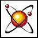
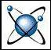
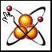
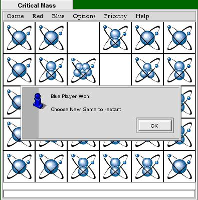
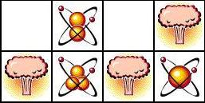

Deep in the heart of a nuclear reactor, a chain reaction is building. Two rare elements, stablium and unstablium, are being created. Your task, should you decide to accept it, is to make sure that only stablium (the red one) remains at the end of your shift. And we both know that, if you've read this far, you're going to give it a try.


Stablium and Unstablium
Due to the peculiar nature of quantum physics, you need only click on an observation chamber in the reactor to ensure that the next atom of stablium is created in it. After all, the act of observation affects the system you're observing.

You, in the act of observing.
Unfortunately, stablium and unstablium are peculiar, even by the standards of quantum physics. Once an atom of stablium has been created, you cannot create another until an atom of unstablium has been created. Worse yet, every atom corresponds to another atom in a parallel universe. And, in this parallel universe, ruthless machines are attempting to use the stablium/unstablium duality to blow up the nuclear reactor, causing a rift in the fabric of space-time, and all kinds of cheap 50's-style sci-fi effects, such as the total destruction of the universe as we know it. So you can expect interference with your otherwise tame workshift, as the computer attempts to flood the world with unstablium, and you bravely attempt to hold back the onslaught.

The reactor,
just before causing a rift in space-time.
In case that wasn't bad enough, once the first two atoms have been created, more will continue to be created until only one type remains. So you can't just shut down the reaction. Well, actually, you can, but quitting is no fun.
How can you get rid of unstablium, when it keeps getting created? Well, remember that you are in a nuclear reactor, where chain reactions are the order of the day. All you have to do is to overload one observation cell. This causes the cell to blow up, throwing stablium atoms into adjacent cells, potentially causing a chain reaction. Simple, huh?

Just another day at the nuclear plant.
For details on how these explosions work, see the Game Rules page.